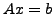

Bootstrap Algebraic Multigrid (BAMG) is a multigrid-based solver for matrix equations of the form . Its aim is to automatically determine the interpolation weights used in algebraic multigrid (AMG) by locally fitting a set of test vectors that have been relaxed as solutions to the corresponding homogeneous equation, . This paper develops another form of BAMG, called rBAMG, that involves modifying the least-squares process by temporarily relaxing on the test vectors at the fine-grid interpolation points.
The rBAMG setup process involves several components that are developed in this paper. Besides the new least-squares principle involving the residuals of the test vectors, a simple extrapolation scheme is developed to accurately estimate the convergence factors of the evolving AMG solver. Such a capability is essential to effective development of a fast solver, and the approach introduced here proves to be much more effective than the conventional approach of just observing successive error reduction factors. Another component of the setup process is the use of the current V-cycle to ensure its effectiveness or, when poor convergence is observed, to expose error components that are not being properly attenuated. Another related component is the scaling and recombination Ritz process that targets the so-called weak approximation property in an attempt to reveal the important elements of these evolving error and test vector spaces.
The study of rBAMG here is an attempt to systematically analyze the behavior of the algorithm in terms relative to several parameters. The focus here is on the number of test vectors, the number of relaxations applied to them, and the dimension of the matrix to which the scheme is applied. A large number of other parameters and options could also be considered, including different cycling strategies, other coarsening strategies (e. g., computing several eigenvector approximations on coarse levels), different numbers of relaxation sweeps on coarse levels, different possible strategies for combining test vectors and error components produced by the current cycles, and so on. Studying all of these options and parameters would not be feasible here. Instead, reasonable choices are made based on some sample studies (that, in the interest of space, we choose not to document here), with the hope that the rBAMG algorithm studied here is generally fairly effective and robust. Our analysis is thus able to focus on how this scheme behaves numerically in the face of increasing the numbers of test vectors and relaxation sweeps performed on them, as well as the problem sizes.